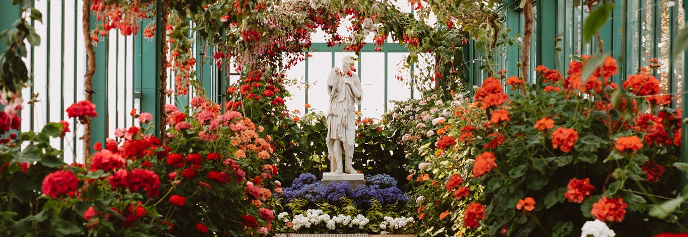

Paula´s Garden – Lovestory



Eine Worpsweder Lovestory: Paula‘s Garden
Seit vier Generationen blühen und gedeihen in Worpswede Schnittblumen, Topfpflanzen und Sträucher und warten auf ihre Käufer.
In guter familiärer Tradition und mit der ihr eigenen Begeisterung für alles Grüne und Neue hat Paula Gerken das Geschäft nun umbenannt in Paula’s Garden. Gar nicht zufällig erinnert ihr Vorname an die größte Künstlerin Worpswedes, die Malerin Paula Modersohn-Becker.
In Paula’s Garden finden Pflanzenliebhaber jetzt nicht nur kunstvolle Blüten-Arrangements für jedes Fest, sondern auch außergewöhnliche Geschenkideen. Und natürlich kann sich jede Hobbygärtnerin und jeder Freizeitgärtner mit allem nötigen Zubehör versorgen.